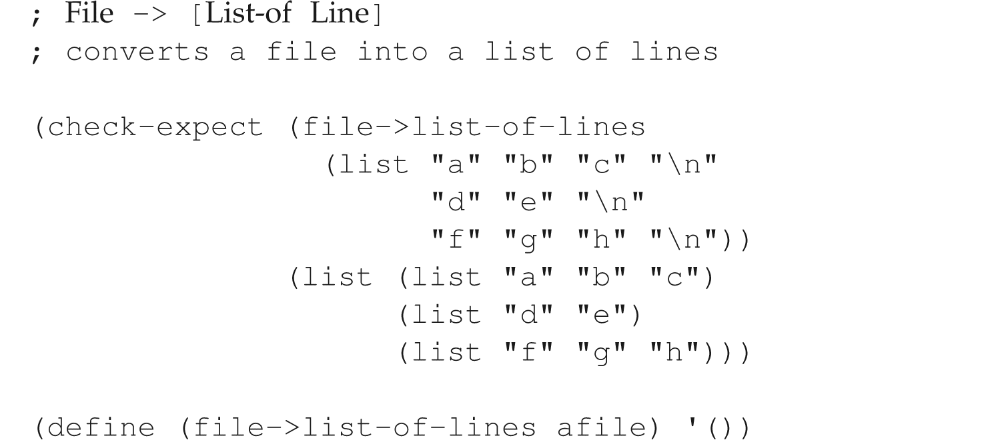
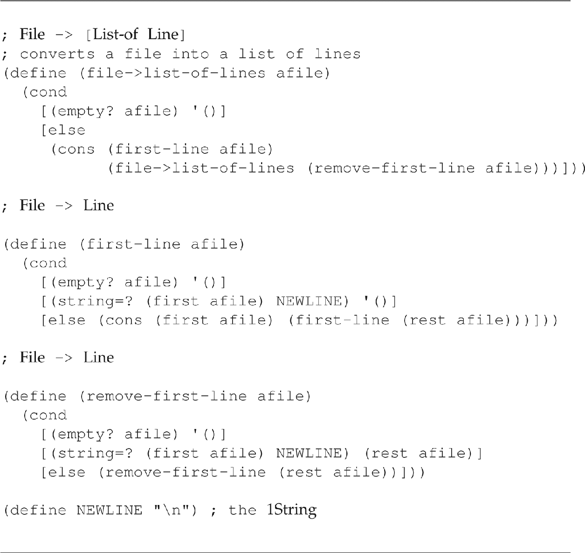
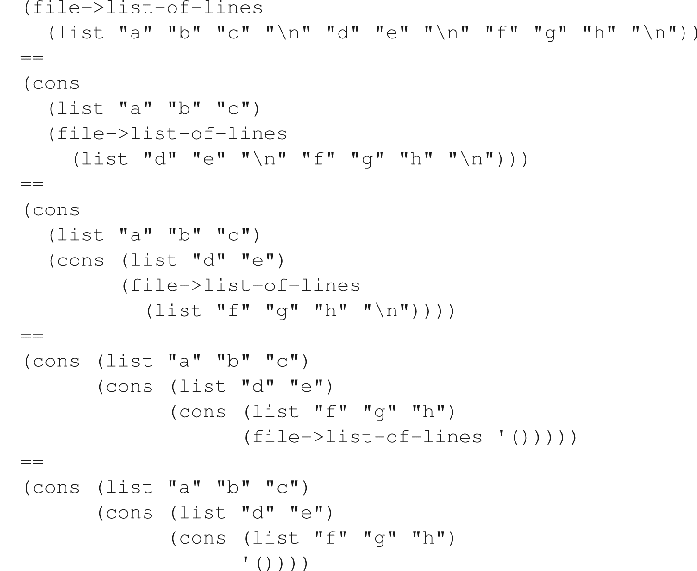
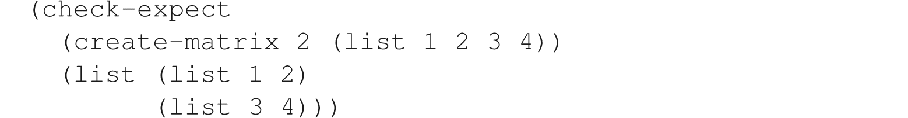

27.3 A Glimpse at Parsing
As mentioned in chapter 20, computers come with files, which provide a form of permanent memory. From our perspective a file is just a list of 1Strings, though interrupted by a special string:
; A File is one of:
; -- '()
; -- (cons "\n" File)
; -- (cons 1String File)
; interpretation represents the content of a file
; "\n" is the newline character
The exact convention differs from one operating system to another, but for our purposes this is irrelevant.
The idea is that Files are broken into lines, where "\n" represents the so-called newline character, which indicates the end of a line. Let’s also introduce lines before we move on:
; A Line is a [List-of 1String].
Many functions need to process files as list of lines. The read-lines from the 2htdp/batch-io library is one of them. Concretely, the function turns the file
(list
"h" "o" "w" " " "a" "r" "e" " " "y" "o" "u" "\n"
"d" "o" "i" "n" "g" "?" "\n"
"a" "n" "y" " " "p" "r" "o" "g" "r" "e" "s" "s" "?")
into a list of three lines:
(list
(list "h" "o" "w" " " "a" "r" "e" " " "y" "o" "u")
(list "d" "o" "i" "n" "g" "?")
(list "a" "n" "y" " " "p" "r" "o" "g" "r" "e"
"s" "s" "?"))
Similarly, the file
(list "a" "b" "c" "\n" "d" "e" "\n" "f" "g" "h" "\n")
also corresponds to a list of three lines:
(list (list "a" "b" "c")
(list "d" "e")
(list "f" "g" "h"))
Stop! What are the list-of-lines representations for these three cases: '(), (list "\n"), and (list "\n" "\n")? Why are these examples important test cases?
The problem of turning a sequence of 1Strings into a list of lines is called the parsing problem. Many programming languages provide functions that retrieve lines, words, numbers, and other kinds of so-called tokens from files. But even if they do, it is common that programs need to parse these tokens even further. This section provides a glimpse at a parsing technique. Parsing is so complex and so central to the creation of full-fledged software applications, however, that most undergraduate curricula come with at least one course on parsing. So do not think you can tackle real parsing problems properly even after mastering this section.
We start by stating the obvious—a signature, a purpose statement, one of the above examples, and a header—for a function that turns a File into a list of Lines:

It is also easy to describe the parsing process, given our experience with chapter 26.1:
1. The problem is trivially solvable if the file is '().
2. In that case, the file doesn’t contain a line.
3. Otherwise, the file contains at least one "\n" or some other 1String. These items—up to and including the first "\n", if any—must be separated from the rest of the File. The remainder is a new problem of the same kind that file->list-of-lines can solve.
4. It then suffices to cons the initial segment as a single line to the list of Lines that result from the rest of the File.
The four questions suggest a straightforward instantiation of the template for generative recursive functions. Because the separation of the initial segment from the rest of the file requires a scan of an arbitrarily long list of 1Strings, we put two auxiliary functions on our wish list: first-line, which collects all 1Strings up to, but excluding, the first occurrence of "\n" or the end of the list; and remove-first-line, which removes the very same items that first-line collects.
From here, it is easy to create the rest of the program. In file->list-of-lines, the answer in the first clause must be '() because an empty file does not contain any lines. The answer in the second clause must cons the value of (first-line afile) onto the value (file->list-of-lines (remove-first-line afile)), because the first expression computes the first line and the second one computes the rest of the lines. Finally, the auxiliary functions traverse their inputs in a structurally recursive manner; their development is a straightforward exercise. Figure 160 presents the complete program code.

Figure 160: Translating a file into a list of lines
Here is how file->list-of-lines processes the second test:

This evaluation is another reminder that the argument of the recursive application of file->list-of-lines is almost never the rest of the given file. It also shows why this generative recursion is guaranteed to terminate for every given File. Every recursive application consumes a list that is shorter than the given one, meaning the recursive process stops when the process reaches '().
Exercise 452. Both first-line and remove-first-line are missing purpose statements. Articulate proper statements. 
Exercise 453. Design the function tokenize. It turns a Line into a list of tokens. Here a token is either a 1String or a String that consists of lower-case letters and nothing else. That is, all white-space 1Strings are dropped; all other non-letters remain as is; and all consecutive letters are bundled into “words.” Hint Read up on the string-whitespace? function.
Exercise 454. Design create-matrix. The function consumes a number n and a list of n2 numbers. It produces an n × n matrix, for example:

Make up a second example.